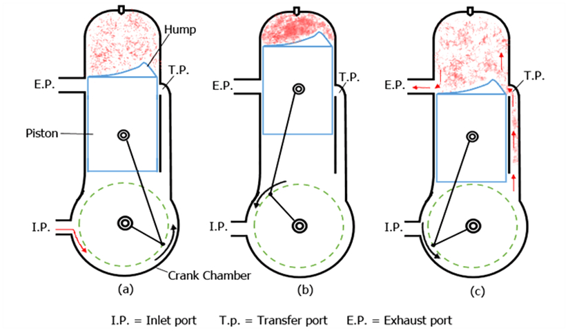

Q.31: Write short notes on Working of 2 stroke engine
Answer:
Working of 2 stroke engine
In two strokes engine the engine the cycle is completed in one revolution of the crankshaft. The main difference between two stroke and four stroke engine is in the method of filling the fresh charge and removing the burnt gases from the cylinder. In the four strokes engine operations are performed by the engine piston during the suction and exhaust stroke respectively. In two stroke engine, the filling process is accomplished by the charge compressed in crankcase or by a blower. The induction of the compressed charge moves out the product of combustion through exhaust port. Therefore, no piston strokes are required for these two operations. Two strokes are sufficient to complete the cycle, one for compressing the fresh charge and other for expansion or power stroke.
The air or charge is inducted into the crankcase through the spring loaded inlet valve when pressure in the crankcase is reduced due to upward motion of the piston during compression stroke. After compression and ignition, expansion takes place in a usual way.
During the expansion stroke the charge in the crankcase is compressed. Near the end of the expansion stroke, the piston uncovers the exhaust port and the cylinder pressure drops to the atmospheric pressure as the combustion products leave the cylinder. Further movement of the piston uncovers the transfer port, permitting the slightly compressed charge in the crankcase to enter the engine cylinder. The top of the piston has usually a projection to deflect the fresh charge towards the top of the cylinder before flowing to the exhaust ports. This serves the double purpose of scavenging the upper part of the cylinder of the combustion products and preventing the fresh charge from flowing directly to the exhaust ports.
